Environnement · Étude d'impact · PostgreSQL/PostGIS · Python · PyQGIS · QGIS · Projet personnel, 2026
État initial de l'environnement
De la friche au dossier : une chaîne de traitement qui produit l'atlas de 18 cartes d'un état initial, et une extension QGIS réutilisable
Contexte et objectif
Avant un projet soumis à étude d'impact, le bureau d'études décrit le site et ses abords : milieux naturels, eau, sols, risques, paysage, urbanisme, foncier, voisinage. La plupart des cartes reviennent d'un dossier à l'autre. Ce projet automatise cette partie du travail, de la recherche du site jusqu'aux livrables.
Le cas d'étude est une centrale photovoltaïque au sol dans le Douaisis (Nord). C'est une étude indépendante, réalisée uniquement à partir de données ouvertes et sans lien avec un porteur de projet : elle n'engage ni la collectivité ni un développeur. Elle sert à montrer un outil et une méthode, pas à conclure sur un projet réel.
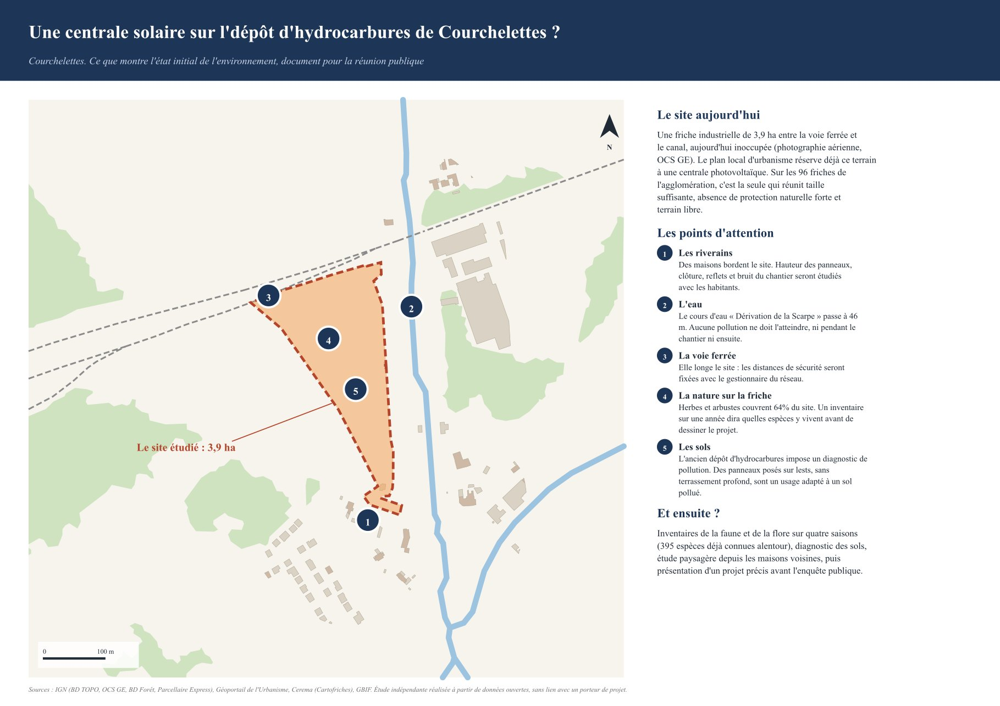
Choisir le site : le criblage des friches
Le criblage est écrit en SQL dans PostGIS. Chacune des 96 friches de Douaisis Agglo est exclue, pénalisée ou favorisée selon 17 critères, pilotés par une table de règles. Une seule est classée favorable : un ancien dépôt d'hydrocarbures de 3,9 ha, qui devient le site étudié. Quinze friches de plus de 3 ha, déjà reconverties, sont écartées par l'usage de l'OCS GE.
Ce critère « site déjà reconverti » est né d'une erreur détectée à temps. Le premier site retenu était une plateforme logistique construite entre 2021 et 2025, que la photographie aérienne et l'OCS GE différentielle ont révélée. Le résultat final est frappant : le PLU de la commune classe déjà 98 % du site en secteur UEpv, destiné aux installations d'une centrale photovoltaïque. Conduit avec les seules données ouvertes, le criblage retrouve un choix déjà inscrit par la collectivité.
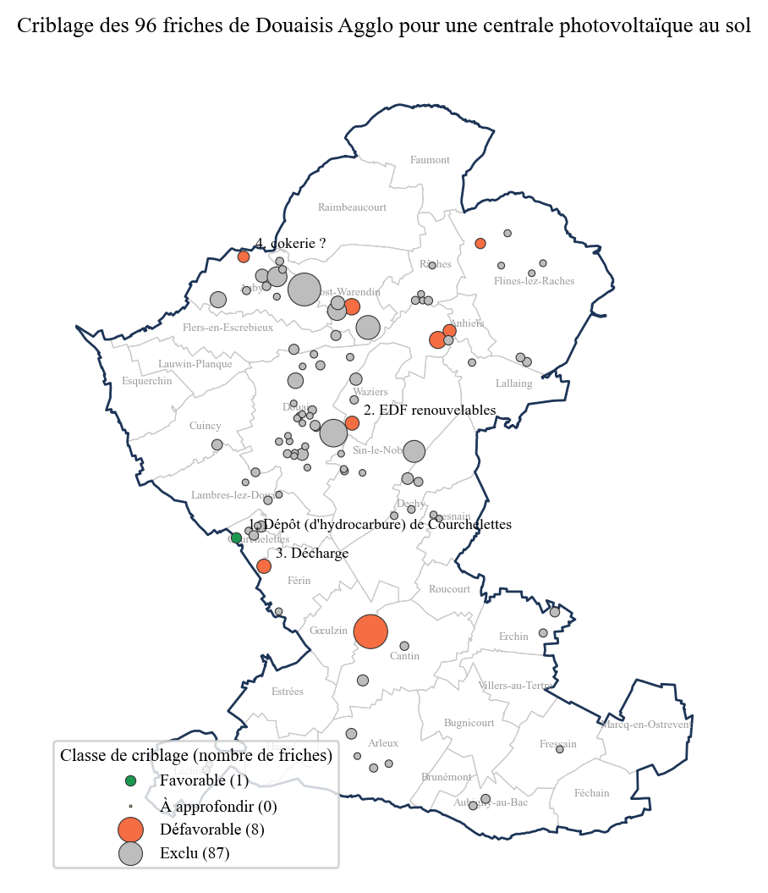
Démarche en cinq étapes
- Référentiel territorial : Douaisis Agglo et une marge de 5 km, soit 36 couches et 65 000 objets chargés dans PostGIS avec leur empreinte de contrôle.
- Criblage des friches par la vue SQL décrite ci-dessus.
- Collecte : les couches sont interrogées sur trois aires d'étude, immédiate (200 m), rapprochée (1 km) et éloignée (5 km), à partir d'une cinquantaine de sources ouvertes. L'OCS GE est prise sur chaque département touché, le Nord (2025) et le Pas-de-Calais (2024).
- Analyses et enjeux : inventaire des zonages, occupation du sol et son évolution, urbanisme, servitudes, foncier, risques, réseaux et espèces avec leurs statuts. Une grille classe 27 sujets de « nul » à « très fort » : 2 forts, 6 modérés, 9 faibles et 10 nuls. Chaque règle est écrite dans le tableur.
- Livrables : atlas, note méthodologique, données, tableur, projet QField, planche de concertation et carte web.
Dans l'aire rapprochée, 395 espèces sont déjà connues, dont 34 protégées et 20 patrimoniales. Les données de GBIF sont opportunistes : elles orientent les inventaires, elles ne les remplacent pas.
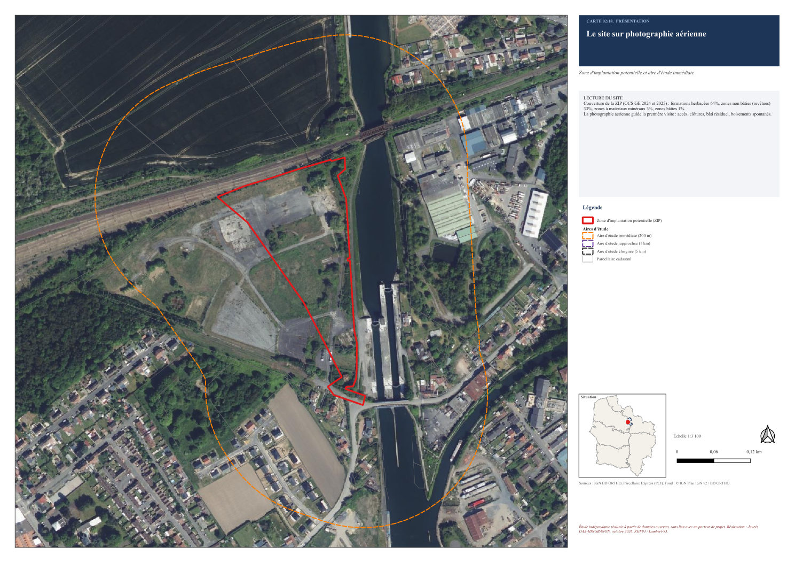
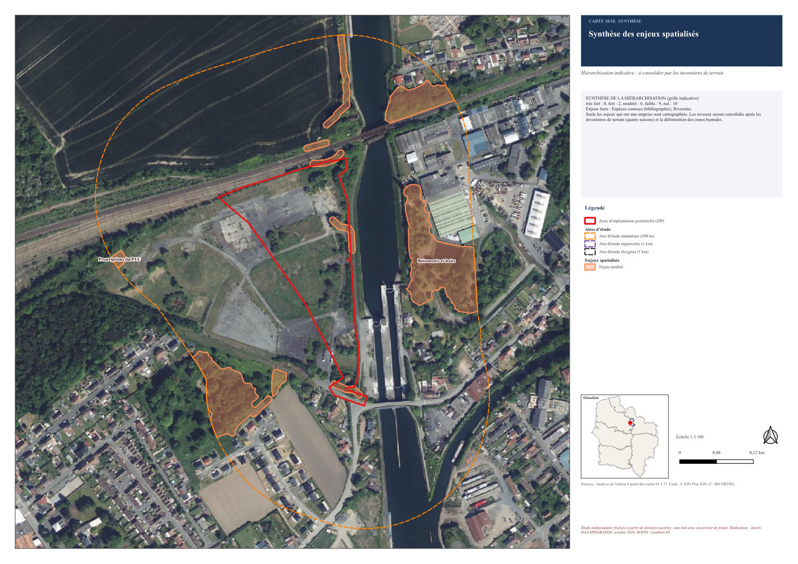
Trois sources d'occupation du sol, comparées
L'OCS GE, Corine Land Cover et l'OSO du CESBIO (produite par apprentissage profond et lue en flux, 5,6 Go pour la France) ne racontent pas la même histoire sur un même site. Je les ai ramenées à six classes communes pour mesurer leur accord, avec l'indice kappa de Cohen, et confronter leurs résultats à l'échelle du projet.
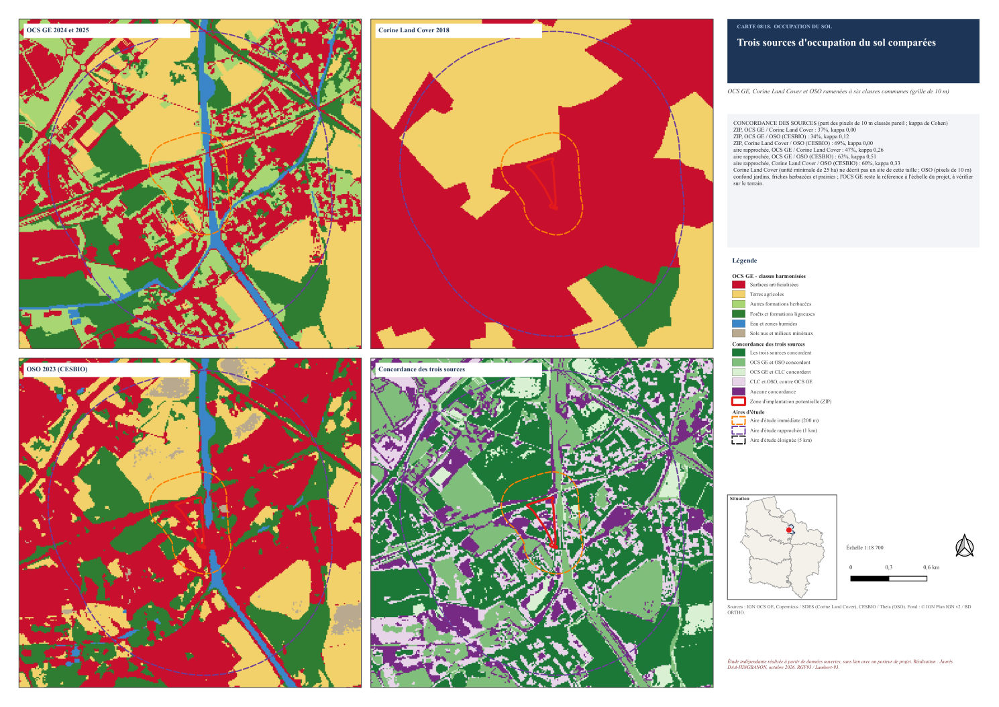
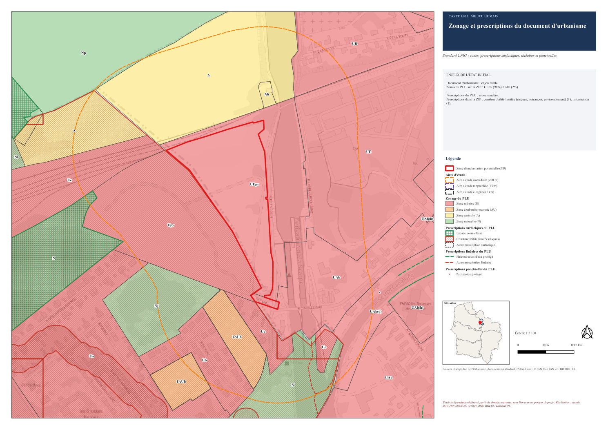
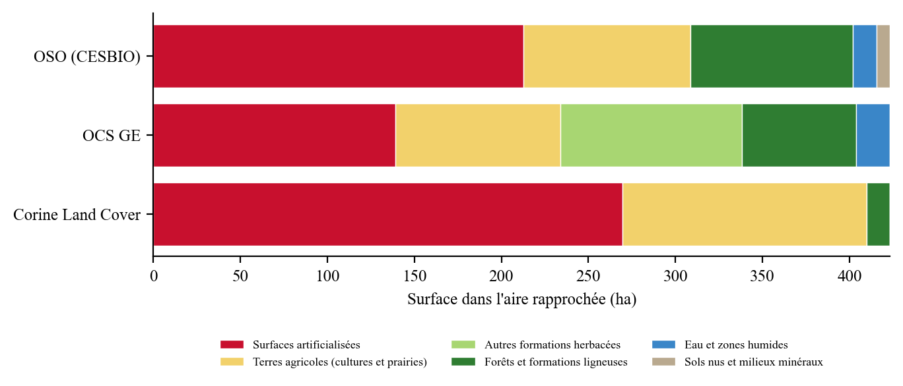
Un atlas de 18 cartes au même gabarit
La bibliothèque Python compose l'atlas A3 avec PyQGIS. Chaque planche suit un gabarit unique : titre, encadré des enjeux, légende filtrée, carte de situation, échelle et sources. Les 18 cartes couvrent la localisation, les milieux naturels, l'eau, l'occupation du sol, l'urbanisme, les servitudes, le foncier, le patrimoine, les risques, les réseaux, les données naturalistes et la synthèse des enjeux.
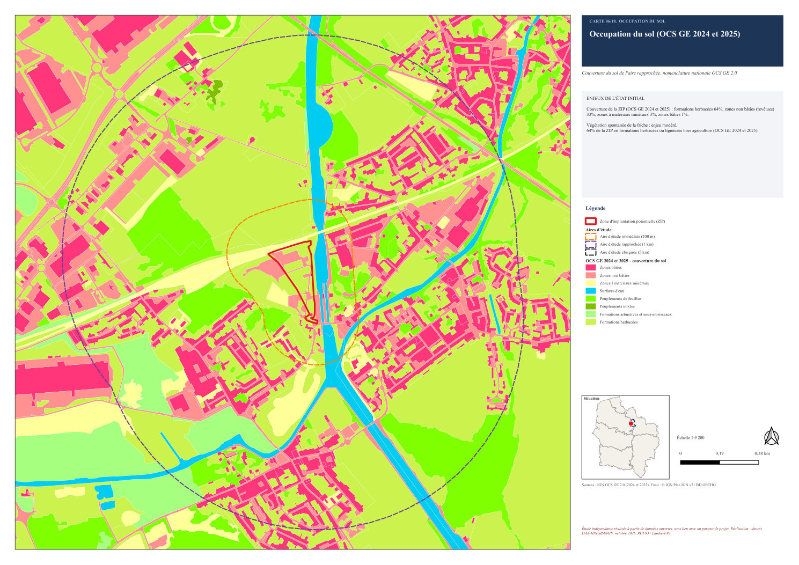
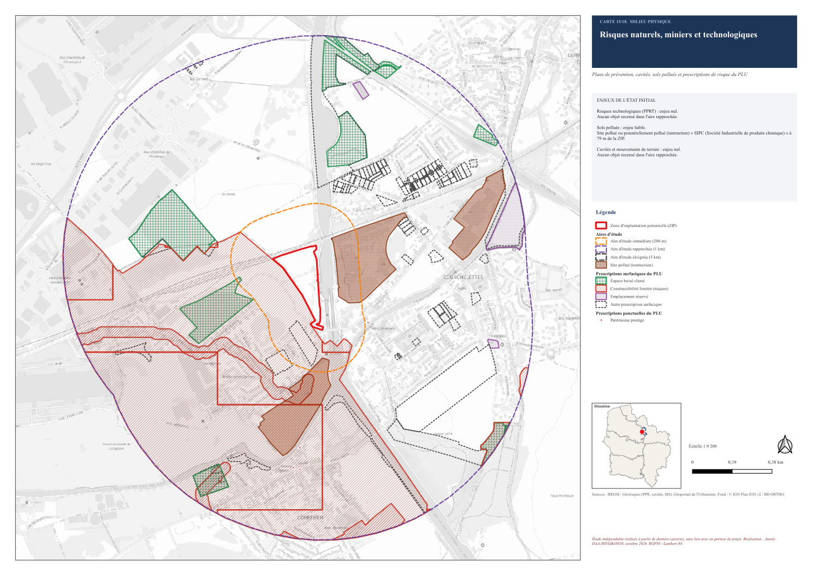
QGIS et Python, deux voies qui se recoupent
Les traitements ont d'abord été faits avec les outils de QGIS : tampons, jointure par plus proche voisin, intersections, statistiques par catégorie, mises en page et atlas. Trois modèles du modeleur graphique enchaînent les calculs clés (aires d'étude, position des zonages, occupation du sol par aire) et sont intégrés au projet.
Les mêmes traitements sont reproduits en Python : la chaîne relance toute l'étude en une commande, en sept minutes environ une fois les données téléchargées. Un contrôle croisé compare les deux voies : au plus 0,03 ha d'écart sur les aires d'étude, 0,3 m sur les distances de zonage et 0,01 ha sur les surfaces d'occupation du sol. Le code compte environ 5 600 lignes et 17 tests automatiques.
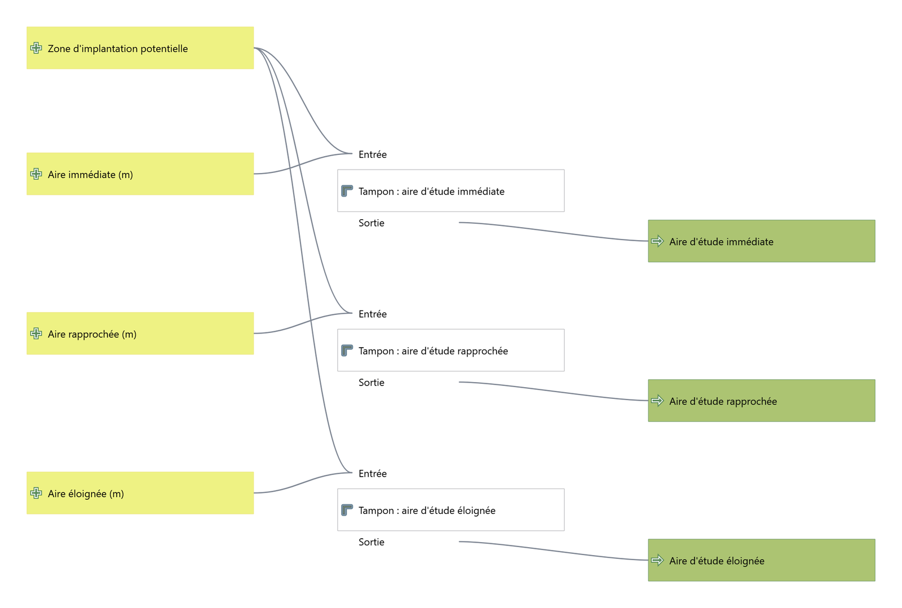
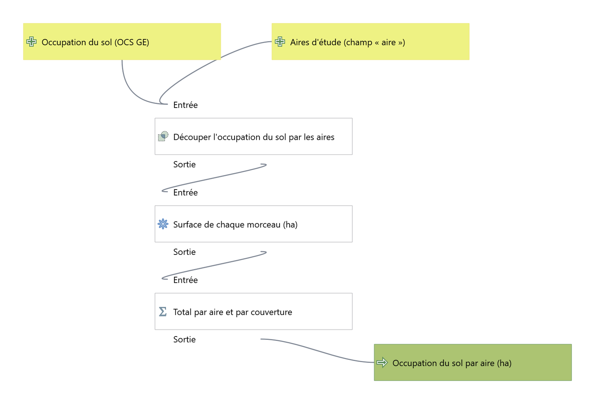
Une extension QGIS pour n'importe quel périmètre
L'extension « État initial » applique la même méthode à tout polygone de France métropolitaine, même si certaines couches régionales restent propres aux Hauts-de-France. L'algorithme Produire l'état initial d'un périmètre prend un polygone, un type de projet (photovoltaïque, éolien ou aménagement) et un dossier, puis produit le GeoPackage, le projet QGIS et les 18 planches. Elle a été essayée sur une autre friche du territoire.
Pour l'installer, dans QGIS : Extensions, Installer depuis un ZIP, puis choisir le fichier téléchargé.
Télécharger l'extension QGIS (60 Ko) Atlas complet (PDF, 17 Mo)Terrain et veille
Le projet QField des inventaires (observations, habitats EUNIS, liste des espèces connues) se copie sur une tablette. Au retour, un script contrôle les relevés (champs obligatoires, date, position, doublons) et verse les relevés valides dans la base, où un déclencheur refuse toute observation hors de l'aire d'étude. Les anomalies sont listées dans un rapport.
Un script de veille compare chaque couche au flux de son producteur et journalise les changements. Avec une option, il recharge les couches modifiées et recalcule le criblage.
Limites
La hiérarchisation des enjeux est indicative. Les inventaires de la faune et de la flore sur un cycle complet et la délimitation des zones humides (sol et végétation) restent indispensables. Les fichiers fonciers ne sont pas ouverts : en mission, ils s'obtiennent sous convention, et les propriétaires privés ne sont pas nommés ici. Les aires d'étude sont des distances fixes : une analyse de visibilité sur un modèle de terrain affinerait l'aire éloignée pour le paysage.
Consulter le projet
La carte web, la note méthodologique de 7 pages et le dépôt complet (scripts Python et SQL, extension, livrables) sont en accès libre.
Ouvrir la carte web Voir le code sur GitHub Note méthodologique (PDF)